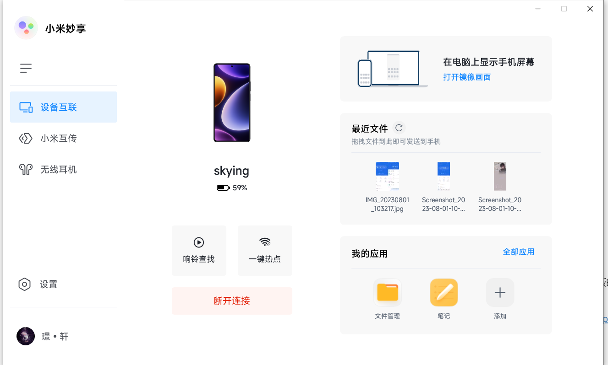

小米使用体验（长期更新）
记录一下小米产品的使用体验，随缘更新。
2023.8.1
想了一下，手上目前两台米家设备，又打算买一个小米手环，这样一来小米的设备多了，看来必须记录一下使用体验了。
上手红米note12Turbo已经两个星期多了，当初讲了一些刚上手的体验，今天讲讲其它的。
手机整体使用还是很不错的，这块处理器各项性能都很优秀。续航也可以，早上充满电，中度使用可以到下午7点还剩20的电，轻度使用一整天应该没问题。也放一个平板的跑分对比，平板处理器是8+。


网易云音乐在锁屏时会专门有一个播放界面，背景是歌曲的封面之类，然后会有歌词，下面会有一个滑动解锁，但是，前两天不知什么原因，这个滑动解锁一直失效，只能从下边缘上划解锁。不过这个bug这两天又消失了，真不知道是MIUI还是网易云的锅。

其它的bug暂时没有遇到，只是小米传送门的支持范围还是不够，比如edge浏览器还有一些其它场景用不了。
接下来重点讲一下小米的设备互联，也就是小米妙享。小米妙享是只支持自家电脑的，但是民间自有大佬在。当初刚到手平板的时候浅尝试了一下，没有成功，前几天又试了一次，很顺利也很成功。
主要参考这个全网最简单！小米妙享安装方法_哔哩哔哩_bilibili和PC小米妙享安装+解锁流转补丁 来自 ChsBuffer - 酷安 (coolapk.com)所以说玩机这块还得看酷安。
各项功能基本正常，手机能传文件和屏幕投屏，在电脑连接了手机热点后，延迟和流畅度表现都很优秀，不足之处是画面清晰度不够，不过考虑到电脑和手机的分辨率和像素密度，倒也可以理解。
连接平板功能更多，可以作为镜像和扩展屏，也可以键鼠共享。其中最有用的要数屏幕扩展了，也就是把平板作为副屏来使用 ，经过测试，刷新率会被限制在60hz，帧率在144hz，还行吧。键鼠共享体验还算合格，即使我笔记本用的是无线键鼠，这样共享过去几乎还是感受不到延迟，缺点是鼠标有点飘，部分原因是分辨率问题。

其它功能音乐流转、应用接力都可以使用。
接下来讲讲目前还存在的问题，
1.首先是一键热点不能正常使用，也就是点了一键热点并不会一键帮你连接，还需要你手动到wifi界面去连接，不过这个我更倾向于是网卡的问题，这b联发科7921问题太多了，天热掉网卡、wifi有时候连不上，以后换个网卡再试试吧。
2.音乐流转手机不能流转到平板上，这个好像是说手机不支持接力，但是手机和平板的音乐都可以流转到电脑上，唯独手机和平板之间不能互相流转，很怪。
3.手机和平板与电脑流转时必须先连接设备且开热点给电脑，即使是处于同一网络。这个也很怪，手机和平版的互联就很方便，基本只要开启了WiFi就行，而电脑即使处于同一wifi下也不行，只能靠热点。